45°
 the result is a shrill squealing.
the result is a shrill squealing.batt.
A combination of space- and conventional rhythm notation. The beat- and barlines represent the units of time (usually seconds). The density and distances on the page correspond to density and distance in time. The rhythms are also notated conventionally, so as to assure a certain precision, especially in the longer pauses. Only the longest general pauses are grouped together (indicated by a number of seconds or measures). Actions which remain the same for more than one measure are, where difficult to represent in conventional pitch-notation, are represented by duration lines that extend across the bars; I have refrained from notating the duration values in full measures. If such actions do not end at a barline, then their precise duration is expressed through a duration value or through the subsequent rest values.
To avoid the constant use of clef changes and ledger lines, a single instrument will occasionally be shown on two staves:
| 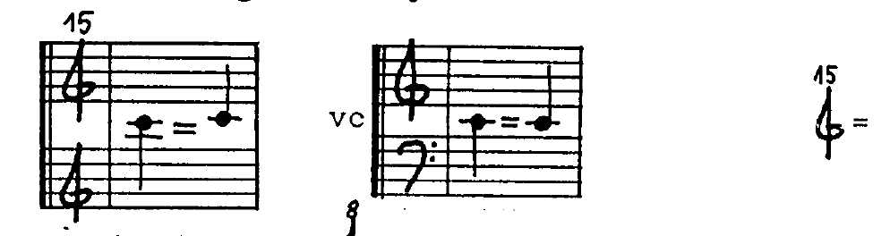 | = two octaves higher |
sometimes there's also 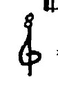 = one octave higher.
Besides conventional pitches one also encounters the following symbols:
| = approximate pitch, the larger the x, the wider the tolerance. | |
| 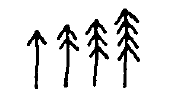 | = high (relative to the indicated string); very high; as high as possbile given arco pos. ord.; as high as possible given arco extr. sul pont. (fingering directly next to the hair of the bow) |
| 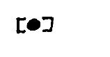 | = fingering which does not reflect the sounding result |
| = sounding result which does not correspond to the given fingering | |
| = touch the string lightly as if executing a harmonic |
These symbols appear in a great variety of combinations along with others still to be named. For the purpose of unifying this notation system, artificial harmonics will always look as follows:
| 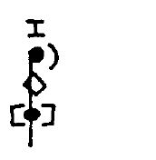 |
= string indication (occasionally superfluous) and resulting sound = lightly touched node = firm fingering |
| 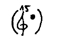 | If space permits next to the fingering and the use of two staves was unwarranted, sounding results are often appended in parentheses. |
| 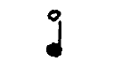 | = natural harmonics, notated as usual, with the string indicated when necessary. |
| 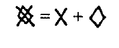 | = approximate pitch, touched lightly. often serves only to hinder normal sound production or to prevent the relevant string from producing sympathetic vibrations. |
| 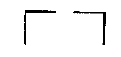 | = start and end of the area in which a given fingering applies |
| 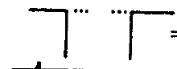 | = the fingering is applicable again following a brief interruption |
| 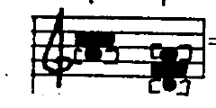 | = behind the bridge (in this case, on the A-string); playing two adjacent strings simultaneously behind the bridge (here the D- and A-strings). |
| = in the tuning box (pizz.). The use of a guitar plectrum is recommended. The intention is short, dry snapping noises with a variety of timbres (as well as very quiet resonance of the instrument, whereas the open strings should be dampened), not necessarily pitch differences that would correlate with the given strings. It may well be that IV in the tuning box sounds higher than III due to the shorter distance to the tuning peg, assuming that the strings are not crossed over. However, the prescribed strings are not arbitrary; they determine (due to the different thicknesses of the strings) differing degrees of noisiness, and, on each string, recognizably identical results. | |
| actions which take place elsewhere than the strings, e.g., bowing on the edge of the faceplate ('zarge') or audible breathing. | |
| 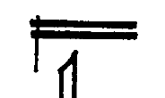 | "doppelzarge", bowing both the edge of the faceplate and the backplate. |
| 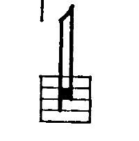 | Bow as clef: battuto actions on the faceplate edge with the bowhair produces different pitches between the tip and about the middle of the bow. The closer to the tip, the higher the pitch. |
| 45° | = bow the string at an angle of 45° or more. On the open string or in lower registers the 4th partial would be the result. In this context, however, this bowing technique is always combined with a damping by the left hand, so as to achieve breath=-like sounds in a variety of timbres. |
| steg 45° |
= the same bowing technique on the bridge (again suppressing the resonance of the strings). combined with the result is a shrill squealing. |
| batt. | = struck with the bow hair, with no up- or downstroke whatsoever. |
| c. l. batt. |
= the same, col legno |
| 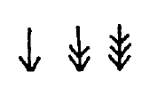 | = degrees of excess bow pressure. The rightmost symbol indicates that the fingered pitch is only barely discernible. |
| = extreme bow pressure, rattling sound; the fingered pitch is no longer discernible. | |
| 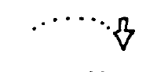 | = continually increasing bow pressure |
| 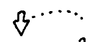 | = continually decreasing bow pressure |
| 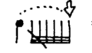 | = together with battuto: press-and-hold-effect |
| = allow the string to be pulled out of position by bow pressure. after the string snaps back, the segment of the string behind the bow will reverberate. | |
| 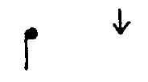 | at the end of a duration, the bow makes a sudden halt, maintaining constant bow pressure. |
| 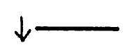 | = maintain bow pressure through the pause |
| = a rolling, circling motion of the bow. In combination with |
|
| 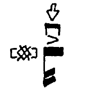 | = an abrupt, brief arco with excess bow pressure. The result is a rattling with a predetermined pitch content, that doesn't correspond to the lightly fingered pitch. Intended are the differences between the strings, the finger positions |
all pressure-sounds are meant not as 'expression', not brutal or violent, but rather technical/instrumental, as 'concrete sounds', as the sound material of absolute music without a programmatic content. The loveliest results (always deep and rattling, not high and squeaky) can be achieved through a carefully heard, judiciously balanced relationship between bow length, bow direction and pressure (not too high), and by bowing closer to the fingerboard than usual.